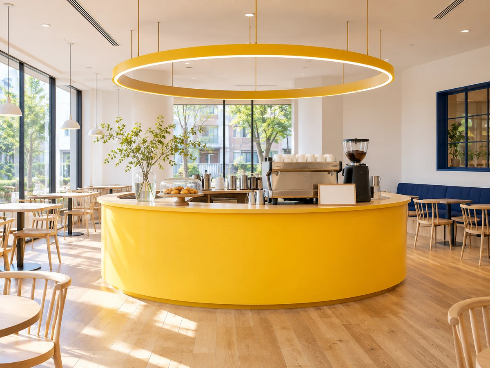

CONCEPT
まちの「会所」が、
喫茶店になりました
かつての錦二丁目には、まちの人が集まる「会所」がいくつもありました。 その会所を新しいかたちでよみがえらせる、まちづくりの拠点として、2022年に生まれた喫茶店です。
Kissa Nanaban
地域の内からも外からも、いろいろな人が集うまちのひと息の場所です。
たまたまも、わざわざも、 公式サイト（コンセプト）より
「店内は清潔感があり、広々とした雰囲気」という来店者の声もありました。
